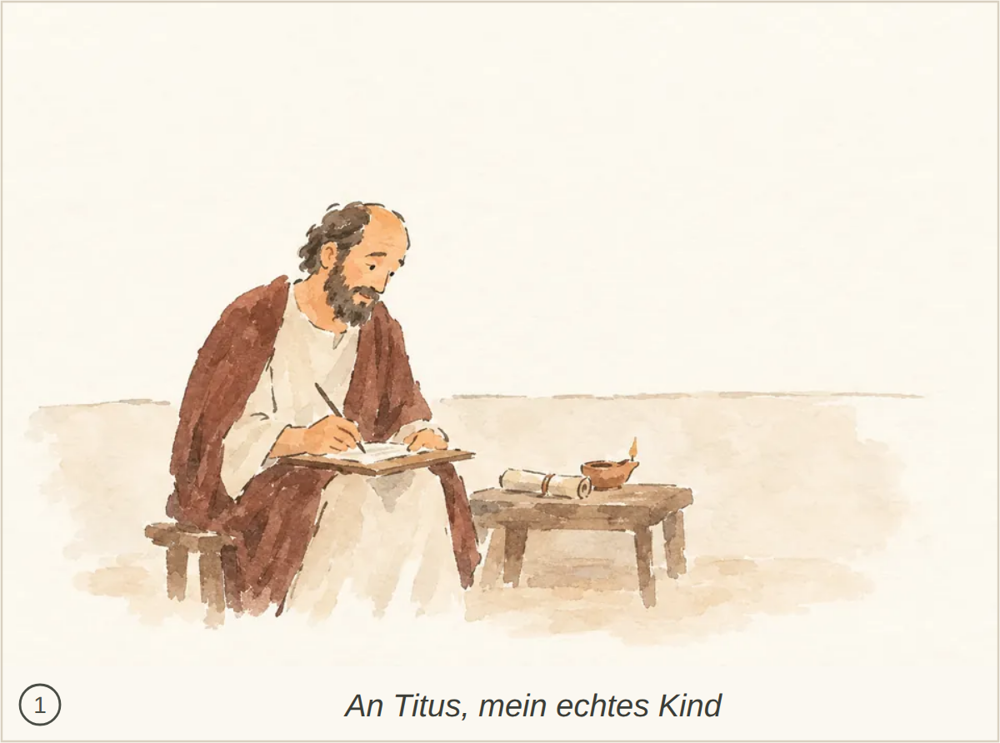
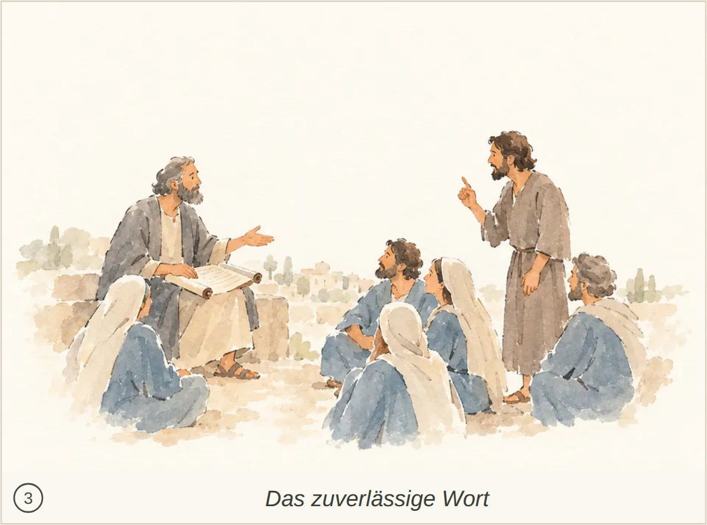
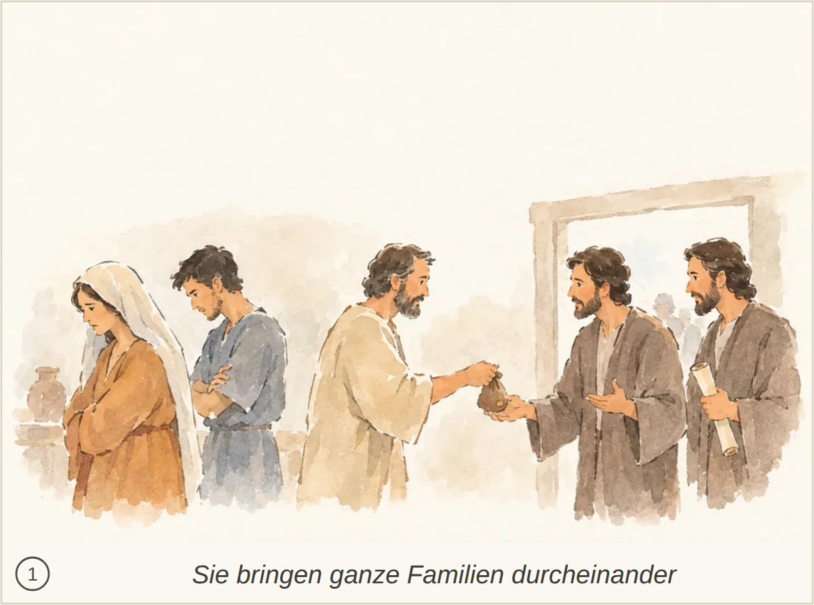
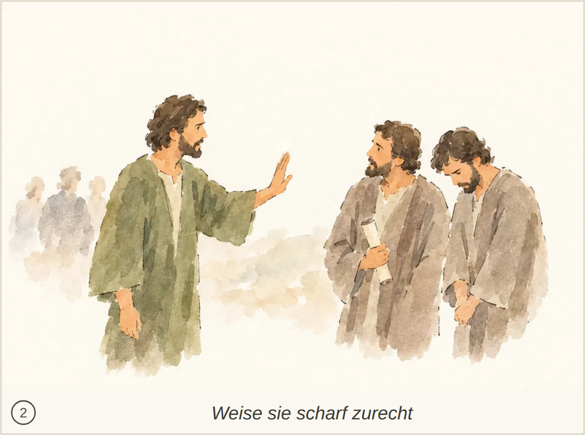
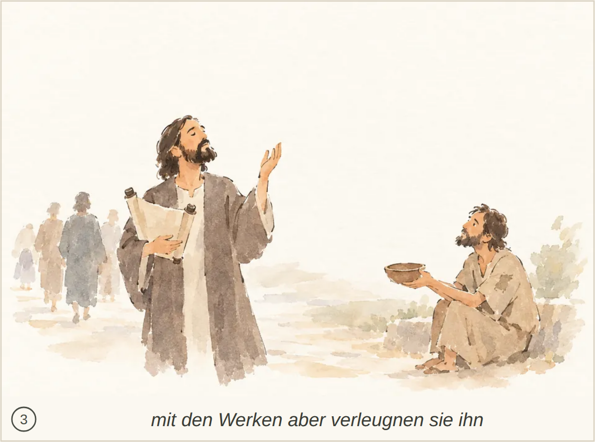
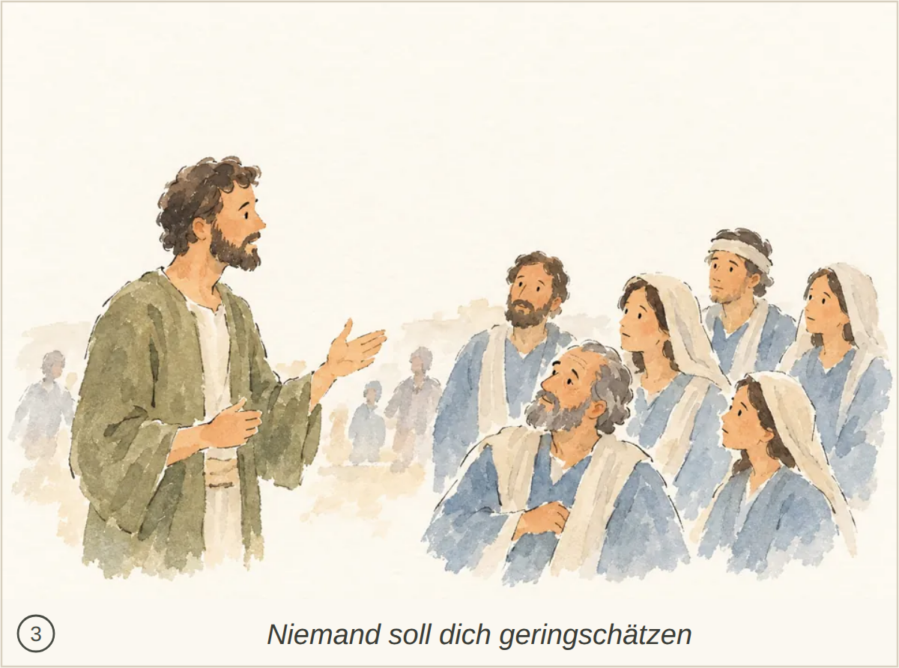
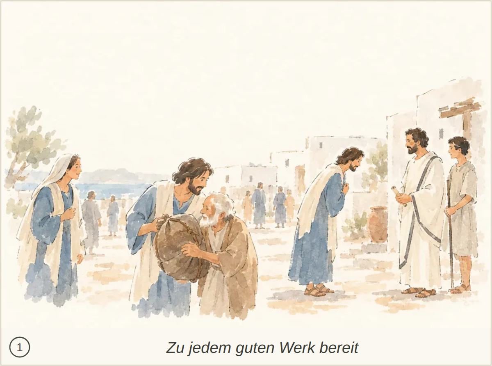
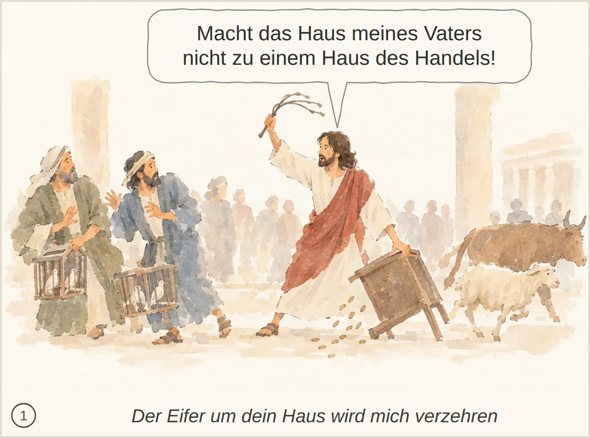
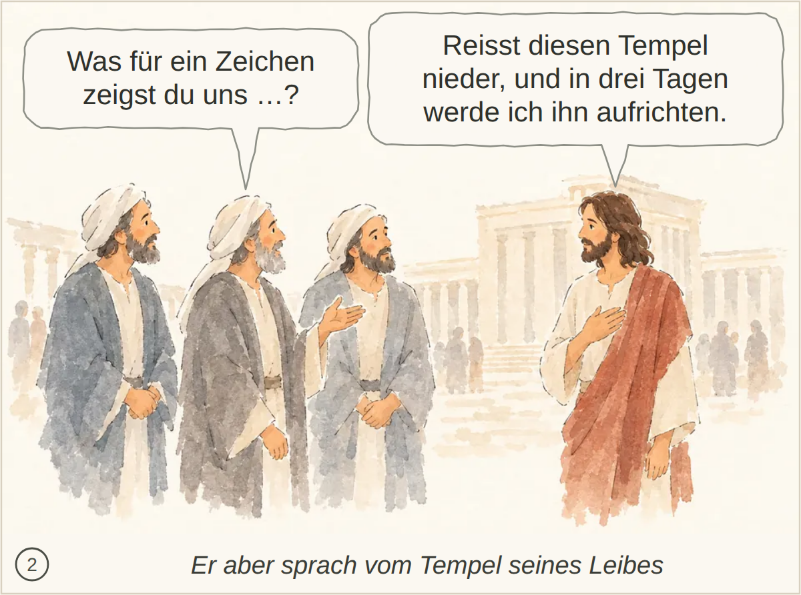
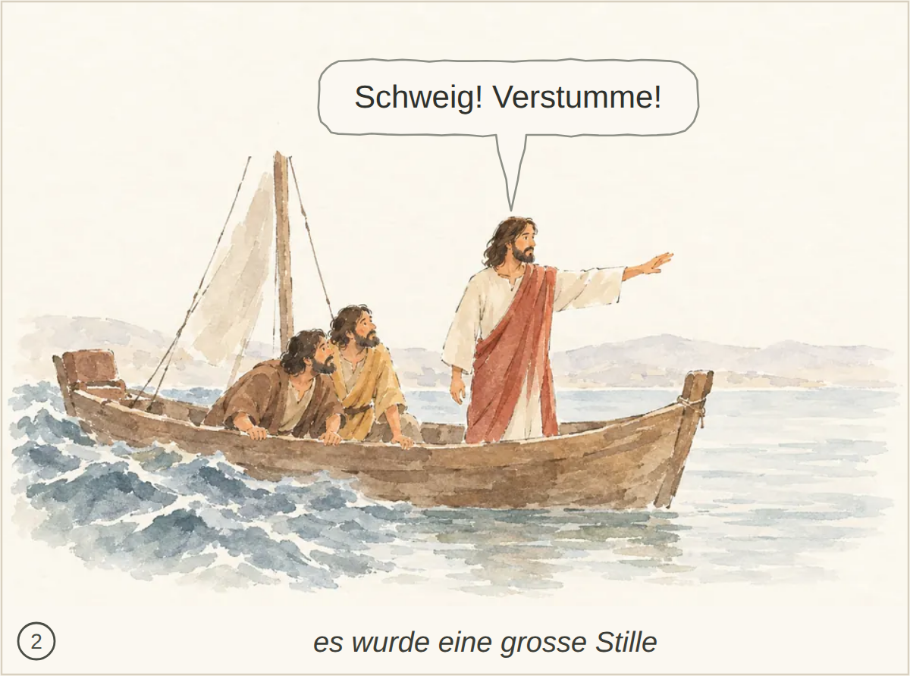

Kachel: bestanden, Kern 1 Paulus wird nicht ausdrücklich als der von Gott beauftragte Verkündiger erkannt; Gottes Verheißung vor ewigen Zeiten bleibt unklar.
abgelegtes Bild: bestanden, 3 Punkte, Kern 1 Paulus ist nicht eindeutig erkennbar; Titus als Empfänger sowie der Inhalt des Grußes bleiben unklar.
Blind: A seated man writes on a sheet resting on his lap. A scroll and a lit lamp sit on the nearby table. – Possibly Paul writing an epistle, but there are no visible details that identify the man or a particular letter.

Kachel: bestanden, Kern 2 Die Hoffnung auf ewiges Leben und der Wunsch nach Gnade und Frieden werden nicht ausdrücklich erwähnt.
abgelegtes Bild: bestanden, 3 Punkte, Kern 1 Die Verkündigung vor Zuhörern ist erkennbar, aber Paulus und die göttliche Verheißung des ewigen Lebens sind nicht eindeutig dargestellt.
Blind: The man on the left holds a scroll and gestures toward a group of four people. The others face him and appear to listen. – The scene could depict a prophet or teacher addressing listeners, but no specific Bible story or moment can be identified confidently from the visible details.
Kachel: bestanden, Kern 1 Paulus wird nicht ausdrücklich als der von Gott beauftragte Verkündiger erkannt; Gottes Verheißung vor ewigen Zeiten bleibt unklar.
abgelegtes Bild: bestanden, 5 Punkte, Kern 1 Titus und die Einsetzung von Ältesten auf Kreta werden nicht erkannt; auch Paulus’ Auftrag fehlt.
Blind: A man in green rests his hand on the shoulder of a bowed older man holding a staff. Three people stand behind them and watch. – The image may depict Jesus comforting or healing someone, but no specific Bible story or moment can be identified confidently from the visible details.

Kachel: bestanden, Kern 1 Dass Paulus Titus auf Kreta zurückgelassen hat und er in jeder Stadt Älteste einsetzen soll, ist nicht eindeutig erkennbar.
abgelegtes Bild: bestanden, 3 Punkte, Kern 1 Die Gastfreundschaft ist erkennbar, aber die Rolle des Mannes als Ältester sowie seine Familienverhältnisse und übrigen Eigenschaften bleiben unklar.
Blind: An older man offers a loaf and gestures toward a bearded traveler holding a staff. Three people beside him watch, while indistinct figures stand in the background. – The scene may depict hospitality toward a traveler, but there is not enough visible evidence to identify a particular Bible story or moment.

Kachel: bestanden, Kern 1 Gastfreundschaft ist erkennbar, aber seine Rolle als Ältester und die Beziehungen zu Frau und gläubigen Kindern bleiben unklar.
abgelegtes Bild: unklar, 4 Punkte, Kern 1 Der Bezug auf die gesunde Lehre und die Zurechtweisung eines Widersprechenden durch den Ältesten bleiben unklar.
Blind: A seated older man gestures over an open scroll while a standing man raises a finger toward him. Several seated listeners watch the exchange. – It may depict Jesus discussing scripture with a teacher, but the image does not clearly identify a particular Bible story or moment.

Kachel: bestanden, Kern 1 Die Zurechtweisung eines Widersprechenden und der Bezug auf die gesunde Lehre bleiben unklar.
abgelegtes Bild: bestanden, 3 Punkte, Kern 1 Geldübergabe und bedrückte Personen sind erkennbar; die verderbliche Lehre, ihre Wirkung auf Familien und das Stopfen der Münder bleiben unklar.
Blind: An older man holds out a pouch to a bearded man, who reaches beneath it while gesturing with his other hand. A second bearded man watches with a scroll, while the woman and young man at left stand apart with lowered heads and folded arms. – Possibly Judas receiving payment for betraying Jesus, at the moment the money is handed over. The picture has no clear identifying detail that establishes this story.

Kachel: bestanden, Kern 1 Das Lehren der Verführer und das gebotene Stopfen ihrer Münder sind nicht eindeutig dargestellt; auch die Verwirrung der Familie bleibt nur angedeutet.
abgelegtes Bild: bestanden, 2 Punkte, Kern 1 Paulus und Titus werden nicht erkannt; das Kreter-Zitat und der Auftrag, die Verführer um eines gesunden Glaubens willen zurechtzuweisen, fehlen.
Blind: The man in green raises a hand toward two robed men. One looks back at him while holding a scroll, and the other bows his head. – It may depict Jesus addressing religious teachers, but the image does not clearly identify a particular Bible story or moment.

Kachel: bestanden, Kern 1 Paulus und Titus sind nicht eindeutig erkennbar; das Prophetenzitat und dessen Bestätigung fehlen.
abgelegtes Bild: bestanden, 3 Punkte, Kern 1 Der Widerspruch zwischen Gottesbekenntnis und fehlenden guten Werken sowie die Unterscheidung zwischen Reinen und Befleckten bleiben unklar.
Blind: A standing man holds a scroll and raises one hand while tilting his face upward. Nearby, a seated man looks up toward him and holds out a bowl, while several distant figures walk away. – Possibly a biblical scene involving a praying or preaching man and a beggar, but the visible details do not identify a particular story or moment reliably.

Kachel: bestanden, Kern 1 Das Bekenntnis zu Gott und die Verleugnung durch die Taten sind nur angedeutet; der Gegensatz zwischen Reinen und Befleckten bleibt unklar.
abgelegtes Bild: bestanden, 3 Punkte, Kern 1 Verschiedene Altersgruppen und hilfreiches Handeln sind erkennbar; Titus’ Anleitung zur gesunden Lehre, die Rolle der Sklaven und die genannten Wirkungen bleiben unklar.
Blind: A bearded man offers a piece of bread to a younger man while an older man stands beside him. Two women work with pale material in a large basin, and a boy holds a jug nearby. – Possibly a scene of sharing bread such as the feeding of the multitude, but the picture does not identify a specific Bible story or moment with certainty.

Kachel: bestanden, Kern 1 Titus und seine Anleitung der verschiedenen Gruppen sind nicht eindeutig erkennbar; auch die genannten Wirkungen bleiben offen.
abgelegtes Bild: bestanden, 4 Punkte, Kern 1 Das erwartungsvolle Schauen ist erkennbar, aber Gottes rettende Gnade, die Erziehung zu einem gottgefälligen Leben und die erwartete Erscheinung Jesu Christi bleiben unklar.
Blind: A group sits around a table with food and cups, many turning to look to the right. A standing woman shades her eyes as she looks into the distance. – A specific Bible story or moment cannot be identified reliably from the visible details alone.

Kachel: bestanden, Kern 1 Das erwartungsvolle Ausschauen ist erkennbar, aber Gottes rettende Gnade, die Erziehung zu einem frommen Leben und die erwartete Erscheinung Jesu Christi bleiben unklar.
abgelegtes Bild: bestanden, 3 Punkte, Kern 1 Jesu Selbsthingabe zur Erlösung von aller Gesetzlosigkeit und zur Reinigung eines eigenen Volkes wird nicht erklärt; die Verbindung zu den guten Werken bleibt offen.
Blind: A robed man bends down and clasps the hand of an elderly seated man, while companions carry bread and a jug. A woman sits with a child beside them, and a man is shown crucified on a distant hill. – The foreground may illustrate Jesus' teaching about feeding the hungry and giving drink to those in need, as in Matthew 25:35–40, with the Crucifixion shown behind. The picture does not identify a specific biblical moment with certainty.

Kachel: bestanden, Kern 1 Jesu Hingabe und die guten Werke sind angedeutet; die Erlösung von Gesetzlosigkeit und die Reinigung seines Volkes bleiben unklar.
abgelegtes Bild: bestanden, 4 Punkte, Kern 1 Der Mann spricht zu einer Gruppe, aber seine Identität als Titus sowie das Ermahnen und Zurechtweisen mit Vollmacht sind nicht eindeutig erkennbar.
Blind: A bearded man gestures with an open hand toward a group of people. They face him as if listening, while a few faint figures appear in the background. – It could depict Jesus teaching a group of followers, but there is not enough visible detail to identify a particular Bible story or exact moment.

Kachel: bestanden, Kern 1 Die Ansprache passt, aber Titus wird nicht erkannt; Ermahnen und Zurechtweisen mit Vollmacht bleiben unklar. Stattdessen wird Timotheus vermutet.
abgelegtes Bild: bestanden, 4 Punkte, Kern 1 Hilfsbereitschaft und Unterordnung sind angedeutet, aber Titus’ Aufforderung an die Glaubenden und die übrigen Verhaltensregeln sind nicht erkennbar.
Blind: A dark-haired man helps an elderly man hold or carry a large bundle while a woman watches. To the right, another similarly dressed man bows toward a white-robed man standing with a staff-holding youth. – It may be a biblical illustration about helping others, but the particular story and moment are not identifiable with confidence from the picture alone.

Kachel: bestanden, Kern 1 Hilfsbereitschaft und Respekt sind erkennbar; Titus’ Ermahnung sowie der Bezug zu Regierenden, Gehorsam und sanftmütigem Verhalten gegenüber allen bleiben unklar.
abgelegtes Bild: durchgefallen, 5 Punkte, Kern 1 Die Taufszene und die Umarmung passen sinnbildlich, aber Gottes Erbarmen, die Wiedergeburt durch den Heiligen Geist und die Hoffnung auf ewiges Leben sind nicht eindeutig erkennbar.
Blind: Two men stand in the water, with the man in green supporting the man in white. On the bank, two other men embrace while several people watch. – Possibly the baptism of Jesus by John the Baptist, with the two men standing in the water before or after the baptism. The image does not show a distinctive sign that establishes their identities or the exact moment.

Kachel: bestanden, Kern 1 Die Taufszene und die Umarmung passen zur Erneuerung und Versöhnung. Gottes Erbarmen, die Wiedergeburt durch den Heiligen Geist und die Hoffnung auf ewiges Leben bleiben jedoch unklar.
abgelegtes Bild: unklar, 4 Punkte, Kern 1 Titus und seine Aufforderung zu guten Werken sowie die Warnung vor nutzlosen Streitfragen werden nicht eindeutig erkannt.
Blind: Several people handle stones beside a low wall while the central man points toward them. On the right, two men gesture toward one another, one holding an unrolled scroll. – Possibly Jesus referring to the stone rejected by the builders, while addressing religious leaders, as in Matthew 21:42. The scene is not specific enough to identify the story or moment confidently.

Kachel: bestanden, Kern 1 Titus und seine Aufforderung zu guten Werken sind nicht eindeutig erkennbar; auch die Warnung, nutzlose Streitfragen und Gesetzesstreit zu meiden, bleibt unklar.
abgelegtes Bild: bestanden, 5 Punkte, Kern 1 Die Abweisung nach zwei Ermahnungen und der Grund der Spaltung sind nicht erkennbar; die Deutung als reicher Jüngling ist unsicher und abweichend.
Blind: A group stands on the left while the green-robed man extends a hand toward a man standing apart on the right. The other man faces away with his arms folded. – Possibly the rich young man turning away after Jesus tells him to sell his possessions and follow him. The image alone does not establish the story with certainty.

Kachel: bestanden, Kern 1 Die Abweisung ist angedeutet, aber Titus, der Anlass der Spaltung und die zwei vorausgehenden Ermahnungen bleiben unklar.

Kachel: bestanden, Kern 2 Nichts Wesentliches fehlt.

Kachel: bestanden, Kern 2

Kachel: bestanden, Kern 2 Der ausgesprochene Satz ist nicht erkennbar; die Handlung ist klar getroffen.

Kachel: bestanden, Kern 2 Die spätere Erinnerung und der Glaube der Jünger werden nicht dargestellt.

Kachel: bestanden, Kern 1 Die Zeichen fehlen; Jesu mangelndes Vertrauen und seine Kenntnis des Menschen bleiben bildlich uneindeutig.

Kachel: bestanden, Kern 1 Das Schöpfen und Bringen zum Speisemeister wird nicht gezeigt; auch die Anweisung der Mutter bleibt unklar.

Kachel: bestanden, Kern 2 Jesu Wissen um das Innere des Menschen sowie Passa und Jerusalem werden nicht ausdrücklich erwähnt.

Kachel: bestanden, Kern 2 Nichts Wesentliches fehlt.

Kachel: bestanden, Kern 2 Nichts Wesentliches.

Kachel: bestanden, Kern 2 Erbverschwendung, Hungersnot und Schuldbekenntnis werden nicht ausdrücklich erwähnt.

Kachel: bestanden, Kern 1 Umarmung und Bekenntnis sind erfasst; Kuss sowie die Anweisungen zu Gewand, Ring, Sandalen und Mastkalb fehlen.

Kachel: bestanden, Kern 2 Nichts Wesentliches; der konkrete Wortlaut des Gesprächs ist nicht erkennbar.

Kachel: bestanden, Kern 2